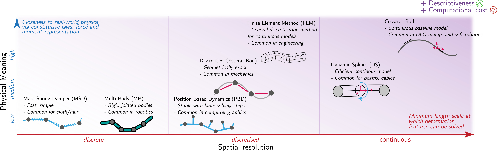

2 Modeling

2.1 DLO Baseline Model: Cosserat Rod Theory
2.1.1 Cosserat Rod Formulation.
In Cosserat rod theory, DLOs are modelled as continuous bodies through a curve \(\mathbf{x}(s, t) \in \mathbb{R}^3\) parameterized by arc-length \(s \in [0, L]\) and time \(t\). The dynamic equilibrium equations governing the motion and deformation of the DLO are derived from the balance of forces and moments along the rod, resulting, respectively, in differential equations: \[ \rho \frac{\partial^2 \mathbf{x}}{\partial t^2} = \frac{\partial \mathbf{n}}{\partial s} + \mathbf{f}_d(s, t) + \sum_i \mathbf{f}_p^{(i)}(t), \quad\; \text{and} \\ \mathbf{0} = \frac{\partial \mathbf{m}}{\partial s} + \mathbf{t} \times \mathbf{n} + \mathbf{c}_d(s, t) + \sum_i \mathbf{c}_p^{(i)}(t), \quad \] where \(\rho\) is the linear mass density, \(\mathbf{n}\) denotes the internal restoring forces, and \(\mathbf{m}\) refers to the internal moments (couples). Forces \(\mathbf{f}_d(s, t)\) and \(\mathbf{f}_p^{(i)}(t)\) correspond to distributed and point external forces, respectively, while \(\mathbf{c}_d(s, t)\) and \(\mathbf{c}_p^{(i)}(t)\) denote distributed and point external moments. The tangent vector along the center line is defined as \(\mathbf{t} = {\partial \mathbf{x}}/{\partial s}\).
The differential equations (1, 2) incorporate constitutive laws that describe how internal forces and moments arise from deformations. That is, these relations connect strains to stresses based on the object's physical properties, describing how bending, twisting, stretching, and shearing generate internal forces and moments depending on the rod's material properties and geometric characteristics. For slender, isotropic, and linearly elastic rods (common assumptions for DLOs) the constitutive laws are typically expressed as: \[ \mathbf{n} = \mathbf{K}_n (\boldsymbol{\nu} - \boldsymbol{\nu}_0), \quad \mathbf{m} = \mathbf{K}_m (\boldsymbol{\mu} - \boldsymbol{\mu}_0), \] where \(\boldsymbol{\nu}\) and \(\boldsymbol{\mu}\) denote the strain fields along the rod, including axial, shear, curvature, and twist strains, while \(\boldsymbol{\nu}_0\) and \(\boldsymbol{\mu}_0\) represent the corresponding reference (undeformed) strain states. The stiffness matrices are defined as: \[ \mathbf{K}_n = \text{diag}(GA, GA, EA), \quad \mathbf{K}_m = \text{diag}(EI_1, EI_2, GJ), \] with \(E\) being the Young’s modulus, \(G\) the shear modulus, \(A\) the cross-sectional area, \(I_1\) and \(I_2\) the second moments of area, and \(J\) the polar moment of inertia. Typically, \(\mathbf{K}_n\) and \(\mathbf{K}_m\) in (3) are assumed to be constant along the DLO domain. For cases involving variable stiffness along \(\mathbf{x}(s,t)\), i.e. \(\mathbf{K}_n(s)\) and \(\mathbf{K}_m(s)\), the reader is referred to a more general formulation of (Tummers et al., 2023). Another clear and concise discussion of the Cosserat model, particularly focused on the kinematic aspects, is provided in (Rucker and Webster III, 2011).
2.1.2 Boundary Conditions.
Solving differential equations (1, 2) requires Boundary Conditions (BCs) that establish the model within a specific manipulation scenario, thereby defining the physical context for the model. In the context of DLOs, boundary conditions typically fall into two main categories: actuation, which describes how the object is controlled or manipulated, and environmental constraints, representing interactions with external elements such as surfaces, fixtures, or obstacles.
Actuation: Refers to boundary conditions that can be actively modified during manipulation. Typical setups include single-end grasping (one grasped end, the other free), dual-end grasping (both ends are grasped, i.e., clamped DLO), and variable contact points (e.g., a DLO pushed on a table at different points). These impose specific pose and force constraints and determine the numerical strategy for solving (1, 2). In single-end cases, the problem is usually solved via shooting methods, while dual-end cases are formulated as two-point Boundary Value Problems (BVPs) and can be solved, for example, through spectral collocation. Specialized DLO models with BCs arising from continuous actuation along the domain, such as tendon-driven actuation, are also common in related fields like soft robotics (e.g., Tummers et al., 2023).
Environmental constraints: Refer to external factors that affect the DLO but cannot be actively modified during DLO manipulation. These typically include factors such as distributed forces like gravity, friction and contacts with surfaces (Jilani et al., 2025), fixtures, and obstacles in the environment.
2.2 Classification of DLO Models
2.2.1 Spatial Resolution.
- Continuous: They describe the deformation of DLOs over a continuous spatial domain. Continuous physical models offer high accuracy but typically imply high computational cost. Examples include the already discussed Cosserat rod formulation (Antman, 1972), along with particularisations of the Cosserat rod like the Kirchhoff rod (Bretl and McCarthy, 2014) for inextensible, non-shearable rods, or the Timoshenko rod, which accounts for shear in thick inextensible beams. Among these and other classic beam and rod models, other continuous representations for DLO description and modeling include the use of parametric curves such as Dynamic Splines (DS) (Palli, 2020; Theetten et al., 2008; Valentini and Pennestrì, 2011), Fourier series (Zhu et al., 2018), or curvature-based analysis (Cuiral-Zueco et al., 2023).
- Discretised: These models approximate continuous deformation by discretizing the DLO's spatial domain, maintaining correspondence with continuous models either through inherent equivalence or by converging to the continuous solution as the discretization becomes finer. Discretised models typically provide a balance between physical accuracy and computational efficiency. Examples include discretized Cosserat rod formulations through variational methods (Jung et al., 2011), geometrically exact Cosserat through multi-body dynamics (Lang et al., 2011), Cosserat numerical space and time discretisations (Gazzola et al., 2018), as well as other conventional constitutive model approximations like the Finite Element Method (FEM) (Duenser et al., 2018; Koessler et al., 2021).
- Discrete: While some analogies to continuous models may exist, discrete deformation models are inherently defined on a discrete structure and are not derived from the domain discretisation of a continuous formulation. They are typically computationally efficient, but are often less physically realistic. This category includes physics-inspired models, such as the Mass-Spring-Damper (MSD) model (Lv et al., 2017; Yu et al., 2023; Caporali et al., 2024; Almaghout et al., 2024), Multi-Body (MB) model (Servin and Lacoursiere, 2008; Yang et al., 2021) or purely geometric models, like the As-Rigid-As-Possible (ARAP) model (Sorkine and Alexa, 2007). Alternatively, projective dynamics (Bouaziz et al., 2023), and Position-Based Dynamics (PBD) approaches (Bender et al., 2015) achieve a discrete analogy of Cosserat models (not geometrically exact, as opposed to e.g. (Lang et al., 2011)) by including the preservation of the angular momentum (Soler et al., 2018), through the introduction of ghost points for orientation constraints (Umetani et al., 2014), by incorporating quaternions for orientation in the PBD formulation (Kugelstadt and Schömer, 2016), or even achieving differentiable models through compliant PBD (Liu et al., 2023).
2.2.2 Static/Quasistatic vs Dynamic Models.
In DLO manipulation, many setups and tasks are quasi-static, assuming negligible inertial effects (e.g., a foam rod grasped by two grippers), while others require full dynamic modeling (e.g., a rope rapidly shaken by a robot). According to this criterion, models are classified into:
- Static/Quasistatic models: They assume the system is in static equilibrium at each given time, neglecting inertial effects. These models are typically used when DLO deformations are slow and the object's state only (or mostly) changes under actuation. Examples include static Cosserat formulations (Tummers et al., 2023; Jung et al., 2011; Rucker and Webster III, 2011), quasistatic Kirchoff rod models (Bretl and McCarthy, 2014), first order data-driven deformation Jacobian approximations (Zhu et al., 2018), quasistatic MSD (Almaghout et al., 2024; Caporali et al., 2024), or static geometric models like (Sorkine and Alexa, 2007).
- Dynamic models: They model deformation behaviors that depend not only on the current state but also on the object's previous states. These models consider the time-dependent response of the object, typically including acceleration, velocity, or forces acting over time. They are typically governed by second-order differential equations that describe dynamic behavior. Examples of dynamic models include dynamic Cosserat rod formulations (Lang et al., 2011; Gazzola et al., 2018), PBD models (Kugelstadt and Schömer, 2016), MB models (Servin and Lacoursiere, 2008), and other classical approaches such as dynamic MSD models (Cui et al., 2022). A notable subset of dynamic models addresses fast dynamics, which involve rapid motions where effects often neglected in slower scenarios become significant. These include aerodynamic forces (Shen et al., 2025), reduced influence of gravity due to high speeds (Yamakawa et al., 2013), and other fast transient phenomena, as studied in (Zhang et al., 2021) and (Chi et al., 2024).
2.2.3 Physics-based vs Physics-inspired vs Empirical/Heuristic.
This classification differentiates DLO models according to the degree to which they rely on fundamental physical principles. According to this criterion, models are classified into:
- Physics-based: Grounded in fundamental physical laws (e.g., continuum mechanics and deformation energy principles), they incorporate explicit constitutive relations that describe mechanical quantities such as stress, strain, stiffness, and internal forces and moments. Their parameters, such as Young’s modulus, damping coefficients, or mass, are physically meaningful, enabling direct interpretability and calibration from experimental material data. These models are particularly suitable for modeling force inputs and boundary conditions (e.g., continuously distributed loads). Representative examples include the Cosserat model (Jung et al., 2011; Tummers et al., 2023; Gazzola et al., 2018; Lang et al., 2011), the quasistatic Kirchhoff rod model (Bretl and McCarthy, 2014), or the Thimoshenko rod model, which accounts for shear deformation in thicker DLOs.
- Physics-inspired: These models are informed by physical intuition but do not explicitly formulate fundamental mechanical laws. They typically omit rigorous constitutive relations and force or moment equilibrium, instead approximating mechanical behavior through simplified formulations such as deformation energy or nodal balance (e.g., MSD systems). Parameters generally lack a direct and measurable link to material properties, reducing physical interpretability while offering computational simplicity and flexibility. Examples include PBD Cosserat approximations (Umetani et al., 2014; Kugelstadt and Schömer, 2016), MBD (Servin and Lacoursiere, 2008; Yang et al., 2021), DS (Palli, 2020; Theetten et al., 2008; Valentini and Pennestrì, 2011), and MSD formulations (Lv et al., 2017; Yu et al., 2023; Caporali et al., 2024; Almaghout et al., 2024).
- Empirical/Heuristic: These models are based purely on observed geometric behavior or approximations, without explicit consideration of mechanical deformation principles. They model shape evolution or kinematics effectively but do not capture internal mechanical states (e.g., forces, moments, or strains), limiting their ability to handle physical interactions such as contact, gravity, or friction in a principled way. Examples include geometry-based approaches like (Sorkine and Alexa, 2007; Aghajanzadeh et al., 2022) and online-updated deformation Jacobian estimations (Zhu et al., 2018; Cuiral-Zueco et al., 2023). While such models can be extended with additional layers to infer mechanical quantities, these are not intrinsic to their formulation.
2.2.4 Numerical vs Data-driven.
This classification considers the computational approach typically used by models to simulate or predict DLO behavior. Analytical (closed-form) solutions are disregarded here due to their rarity in practical DLO models.
- Numerical methods: They are typically used for physically grounded models and approximate their governing equations through techniques such as ODE integration, BVP shooting, Gauss-Newton optimization, or finite difference schemes (Tummers et al., 2023; Jung et al., 2011). Numerical methods also include energy minimization for discretised physically-based models (Bender et al., 2015) or geometrically inspired models (Sorkine and Alexa, 2007). Models solved through numerical methods are grounded in mathematical representations of physical or geometric behavior and thus can be applied to a wide range of DLO manipulation scenarios and constraints.
- Data-driven methods: They model DLO behavior by learning patterns directly from empirical or simulated data, using statistical approaches (Zhu et al., 2018; Cuiral-Zueco et al., 2023; Navarro-Alarcon et al., 2013; Aghajanzadeh et al., 2022) or machine learning techniques (Laezza and Karayiannidis, 2021; Zakaria et al., 2022; Huo et al., 2022; Yang et al., 2022), which are generally more data-intensive. These methods prioritize low online computational cost and typically require minimal prior knowledge of the underlying physics. While capable of capturing complex, nonlinear dynamics implicitly, their performance is highly sensitive to the quality, diversity, and representativeness of the training data. Consequently, they may struggle to generalize across varying tasks or environmental conditions.
- Hybrid approaches: They combine elements from both numerical and data-driven methods. These models typically embed physical laws or constraints into data-driven frameworks to improve generalization and robustness. Examples include machine learning for parameter estimation (Caporali et al., 2024), or data-acquisition from physical models for data-driven Jacobian estimation (Artinian et al., 2024). A prominent example is physics-informed neural networks, which incorporate governing equations directly into the training process (Bensch et al., 2024). Other hybrid approaches may use simulation data to pre-train models or augment learning with differentiable physics modules or simulators (Liu et al., 2023), or exploit graph neural networks to initialize iterative solvers (Shao et al., 2021).
Table 1. Overview of widely used physics-based frameworks for DLO simulation in robotics, highlighting their core DLO modeling approaches and representative references.
| llp0.55\linewidth@ Simulator | Approach | DLO References |
|---|---|---|
| Bullet | MB | (Yang et al., 2021) |
| FEM | (Seita et al., 2021; Zakaria et al., 2022; Daniel et al., 2024) | |
| Mujoco | PBD | (Chi et al., 2024; Zhaole et al., 2024) |
| AGX Dynamics | MB (elastoplastic) | (Laezza and Karayiannidis, 2021; Laezza et al., 2021; Yang et al., 2022; Yang et al., 2022) |
| Obi (+ Unity) | Extended PBD | (Yu et al., 2022; Yu et al., 2023; Yu et al., 2025; Lv et al., 2023; Luo and Demiris, 2025) |
| FleX | Particle-based | (Pecyna et al., 2022; Ma et al., 2022) |
| IsaacLab (PhysX) | FEM (soft bodies) | (Kamaras and Ramamoorthy, 2025; Govoni et al., 2025) |
| Elastica | Cosserat Rod | (Caporali and Palli, 2025) |
2.3 Simulation of DLOs
Several physics-based simulators support DLO modeling, each providing unique numerical methods, levels of physical realism, and degrees of integration with robotic platforms. Below is an overview of some of the most prominent simulators commonly employed in DLO research, highlighting their core modeling approaches and key references (see Table 1 for a summary):
- Bullet (Erwin Coumans, 2025) and MuJoCo (Todorov et al., 2012): These are widely adopted open-source physics engines that employ PBD-like solvers for real-time simulations. In Bullet, DLOs can be represented either as FEM-like soft bodies or as chains of cylindrical segments connected by 6D springs, mimicking MB models. MuJoCo offers two main representations: cables, which model inextensible rods with bending and twisting stiffness using a geometrically exact formulation discretized into capsules or boxes; and 1D flex, recommended for simulating extensible strings under tension, such as rubber bands.
- AGX Dynamics[1]: Proprietary physics simulation platform that employs a hybrid constraint-based solver for real-time simulations. It offers specialized modules such as Wires, for simulating long, bendable structures under extreme tension and in large-scale scenarios, and Cables, which capture elastic deformations as well as plasticity, using sequences of rigid bodies connected by constraints.
- Obi[1]: Real-time particle-based physics engine that uses extended PBD to simulate deformable objects, available as a plugin for Unity. It supports rod simulations with stretch/shear and bend/twist constraints, and rope simulations with distance and bend constraints.
- FleX (Macklin et al., 2014): Open-source GPU-accelerated particle-based simulator that represents all objects, including DLOs, as particle systems governed by PBD.
- IsaacLab (Mittal et al., 2025): A GPU-accelerated simulation and robot-learning framework built on Isaac Sim and PhysX, and the successor to Isaac Gym. It provides parallel physics, photorealistic rendering, and rich multi-modal sensor simulation, together with tools for domain randomization and large-scale data collection. While not DLO-specific, IsaacLab exposes PhysX’s GPU-accelerated FEM soft-body capabilities, enabling simulation of cables and other deformable linear structures within robotic environments.
- Elastica (Naughton et al., 2021): Open-source software package designed to numerically solve systems made up of collections of Cosserat rods. While not a general-purpose simulator and not real-time, it offers physically accurate modeling of slender structures.